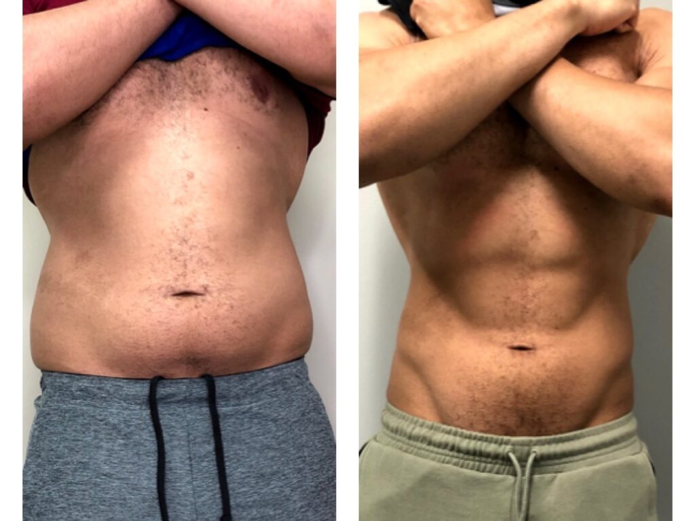
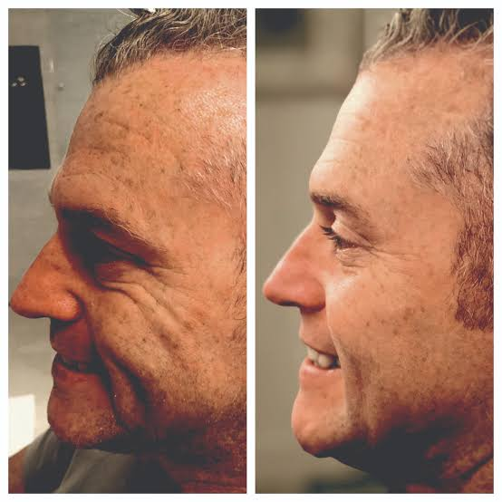
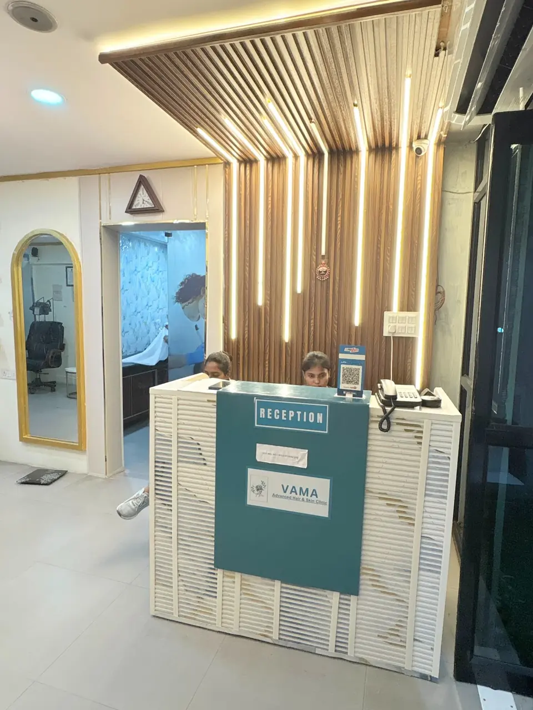

Cryo facial treatment uses controlled cold applied to the face to help reduce puffiness, calm redness and give the skin a tighter, brighter look. It is quick, non-invasive and often used before events or after other skin procedures. VAMA Clinics starts with a skin assessment to check it suits you.
Discuss your skin concern and find out whether cryo treatment is right for you.
Individual outcomes vary. Your specialist can discuss what may be realistic for your skin.



Select the concern that sounds closest to yours. A consultation helps decide whether cryo treatment or another option suits your skin better.
Based on your selection, our specialists usually recommend —
Get a personalised planYour skin type, sensitivity and any conditions such as rosacea or cold sensitivity are checked first.
The cold is applied in a moving, controlled way so the skin is cooled evenly and comfortably.
The cold-therapy part usually takes only a few minutes, as part of a short facial session.
Cryo treatment is non-invasive, and most people go straight back to their day.
It can be used to soothe the skin after procedures such as peels or lasers, where suitable.
Book a cryo facial at VAMA Clinics in Noida, Indirapuram, Wave City, Lajpat Nagar, Kanpur, Lucknow and Agra.
Your skin type, sensitivity, medical history and goals are assessed.
The skin is cleansed and prepared for the cold application.
Controlled cold is moved across the face and neck for a few minutes to cool and refresh the skin.
Moisturiser, sunscreen and the ideal frequency of sessions are discussed.

At VAMA Clinics, cryo treatment begins with a conversation about your skin and what you would like to improve. Our team supports patients across locations in NCR and UP.
Puffiness, open pores, redness and a tired-looking complexion are common everyday concerns. Cryo facial treatment, also called a cryofacial or cryotherapy facial, uses controlled cold to refresh the skin. At VAMA Clinics, it is offered after a skin assessment and can be used on its own or alongside other treatments.
A cryo facial exposes the skin of the face, and sometimes the neck, to very low temperatures for a short time, using a device that delivers super-cooled air or vapour or a chilled applicator. The cold makes blood vessels constrict, followed by increased circulation once the skin warms up again. This is why the skin often looks tighter, less puffy and brighter straight after the session.
Depending on your skin, a cryo facial may help to:
Many of these effects are temporary and are best maintained with regular sessions and good skincare. Cryo facial is not a substitute for medical treatment of acne, pigmentation or scarring.
The cold application itself usually lasts only a few minutes and feels like a cool stream of air that becomes colder as the session goes on. There is no downtime, and makeup can usually be applied afterwards. Your specialist can suggest how often to repeat it, typically every few weeks for maintenance.
People with cold sensitivity, certain circulation problems, rosacea, eczema or very sensitive skin, and those who are pregnant or breastfeeding, should mention this at the consultation, as cryo treatment may not be suitable.
VAMA Clinics offers cryo facial consultations across Noida, Indirapuram, Wave City, Lajpat Nagar, Kanpur, Lucknow and Agra. Discuss puffiness, open pores, redness or a pre-event glow with the team at a convenient location.
Treatment suitability and results vary by individual. This information is general and does not replace a professional medical assessment.
Every skin reacts differently to cold. We begin by checking your skin type and sensitivity.
Cryo can be used on its own for a quick refresh, or to soothe the skin after other suitable procedures.
A good moisturiser and daily sunscreen help keep your skin calm and fresh between sessions.
The instant glow is temporary; regular sessions and skincare help maintain the effect over time.
It is a non-invasive facial that uses controlled cold applied to the skin for a few minutes. It can help the skin look less puffy, tighter and brighter.
Most people find it comfortable. It feels like a cool stream of air that gets colder as the session continues; the device is kept moving so no area gets too cold.
No. Most people return to their routine immediately and can apply makeup afterwards.
The instant refreshed look is temporary, lasting from hours to a few days. Regular sessions, often every few weeks, help maintain the effect.
People with cold sensitivity, certain circulation conditions, rosacea, eczema or very sensitive skin, or who are pregnant or breastfeeding, should consult the specialist first.
Yes, you can book a free initial consultation to discuss your concern and learn about suitable next steps, with no obligation to proceed.
Book a free, no-obligation consultation with VAMA's skin specialists.